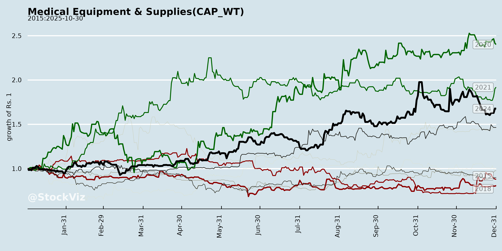
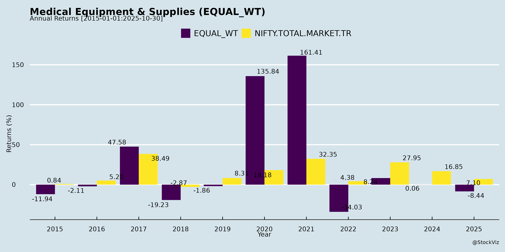
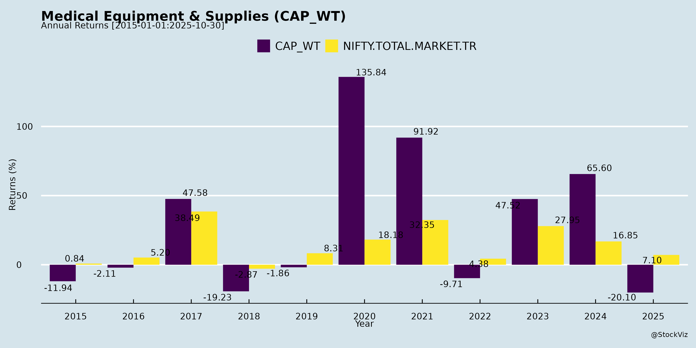
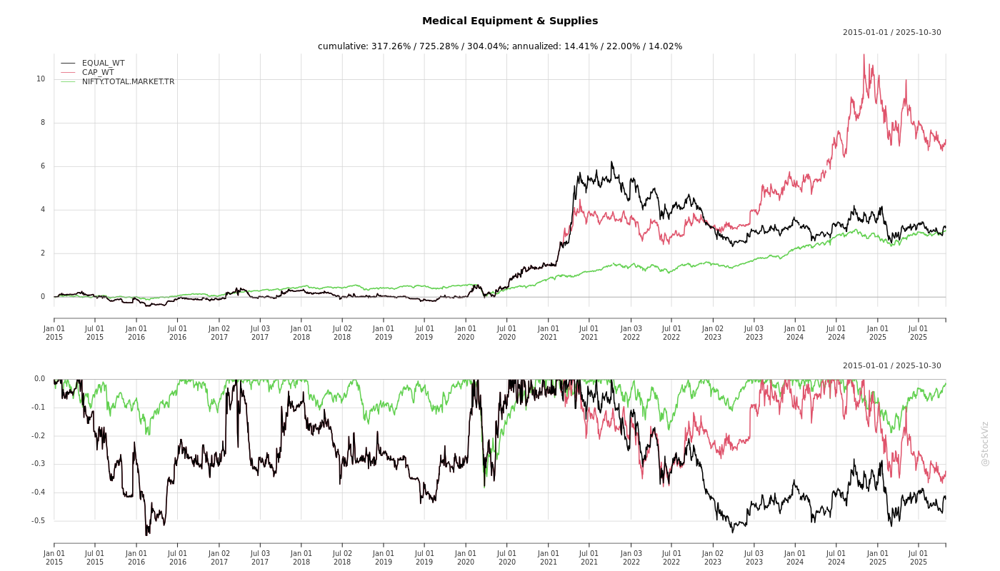
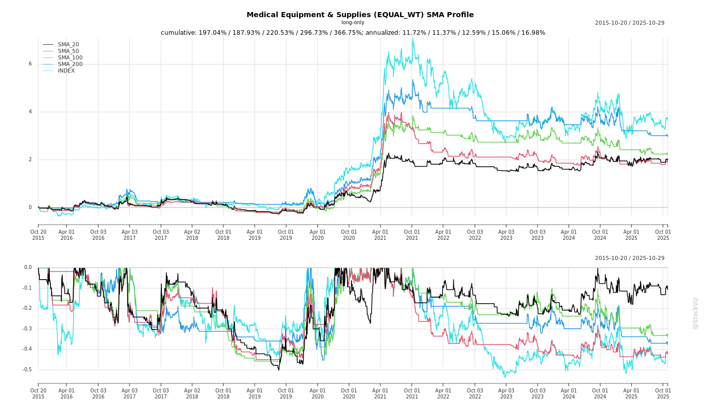
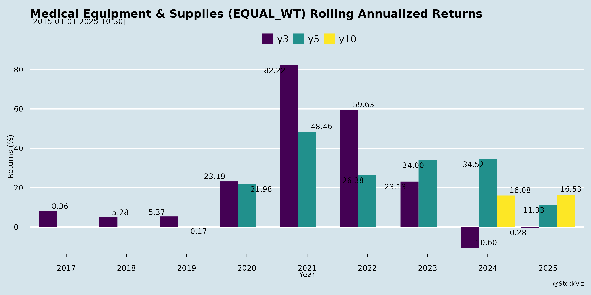
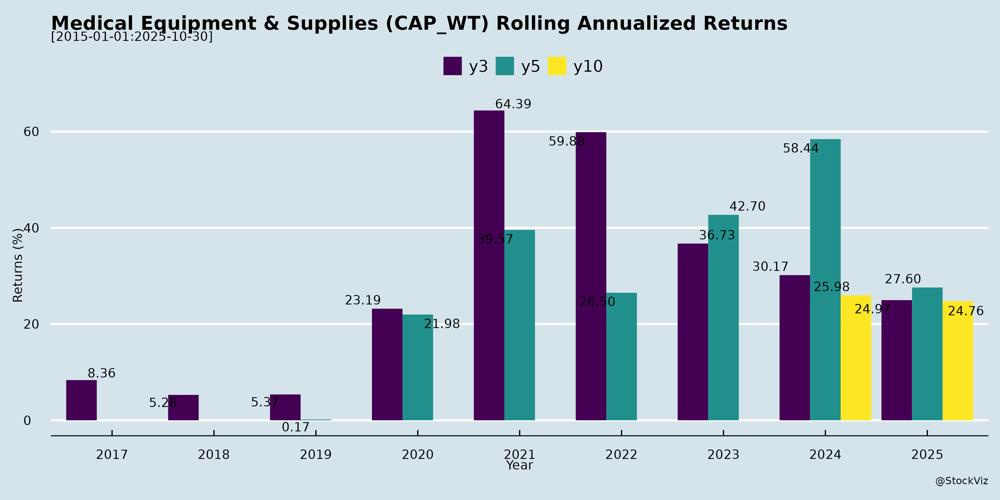

Medical Equipment & Supplies
Industry Metrics
February 20, 2026
Annual Returns




Cumulative Returns and Drawdowns

SMA Scenarios

Current Distance from SMA
Rolling Returns


Market Cap
EBIT (% of Industry Total)
Revenue (% of Industry Total)
AI Summaries
Analyst
asof: 2025-11-30
Analysis of Indian Medical Equipment & Supplies Sector
The provided documents (Q2/H1 FY26 earnings transcripts and announcements from key players like Poly Medicare (POLYMED), Fischer Medical Ventures (FISCHER), Fabtech Technologies, Tarsons Products (TARSONS), and others) offer insights into a diverse medtech ecosystem spanning infusion/renal/cardiology/ortho devices (POLYMED), diagnostic imaging/preventive health (FISCHER), turnkey pharma/biotech engineering (Fabtech), and plastic labware (TARSONS). The sector benefits from India’s ~$15B domestic market (global ~$650B) and PLI/Make-in-India push, but faces export/export-oriented challenges. Below is a structured analysis of headwinds, tailwinds, growth prospects, and key risks, followed by a summary.
Headwinds
- Export/Macro Pressures: US 50% tariffs create “no-trade zone” (POLYMED, TARSONS); Europe degrowth (-9.6% YoY, inventory overhang, Chinese dumping, Suez delays); global uncertainties (geopolitics, post-COVID sluggishness). Exports flat/declining (TARSONS 3Q degrowth despite order book).
- Domestic Competition & Pricing: Intense rivalry (new entrants, MNC subcontracting locals); price commoditization (labware/devices); govt business slowdown (-14% POLYMED); GST transitions disrupting inventory (Renal segment).
- Operational/Execution: Capex ramp-up delays (TARSONS Panchla/Amta partial commissioning); high depreciation (TARSONS Rs85-105cr FY26 peak); acquisition integration (POLYMED PendraCare/Citieffe, TARSONS Nerbe flat due to German economy).
- Regulatory/Logistics: US FDA rejecting Indian lab results; EU MDR re-certification delays; freight/BL issuance issues (TARSONS exports withheld).
Tailwinds
- Govt Policy Support: Ayushman Bharat, PLI schemes, National Health Mission, 200 oncology centers (expanding to 700), TB-free initiatives boost diagnostics/equipment demand (FISCHER MRI/CT growth).
- Domestic Momentum: Strong private sector uptake (POLYMED +22% YoY, domestic 17-18% H1); wallet share gains via new salesforce (100+ hires); biopharma/pharma infra investments.
- Capacity & Product Expansion: Multi-company capex (POLYMED Rs250cr, TARSONS Rs550-650cr, Fabtech efficiencies); 20+ new launches (POLYMED 20 CE-marked products, FISCHER iMRI/CT, TARSONS bioprocess/cell culture).
- Acquisitions/Synergies: POLYMED adds Rs280cr revenue (Citieffe ortho, PendraCare cardio); high margins sustained (POLYMED 26.7% EBITDA, FISCHER 25-28%).
- Cash Resilience: Strong liquidity (POLYMED Rs800cr post-acq., FISCHER net cash Rs28cr); opex leverage (FISCHER 120% YoY revenue).
Growth Prospects
- Domestic (High Confidence): 28-30% FY26 (POLYMED); MRI/CT ~15% CAGR India (FISCHER, 500-1000 installs/yr); labware/pharma infra via wallet share (TARSONS Rs350-400cr peak from new facilities); turnkey projects (Fabtech Rs90k+cr order book, 9% QoQ growth).
- Exports/International: ROW (South Asia/Africa/ME) +13% (POLYMED); MENA/GCC medicinal independence (Fabtech Vision 2030); emerging markets for imaging/preventive (FISCHER 15-20% share aspired); post-tariff resolution US ramp-up (POLYMED/TARSONS $15-20M pipeline).
- Segment TAM Expansion: Ortho ($70B global via POLYMED acq.); diagnostics ($45-50B global, 5-6% CAGR); labware (INR1,200cr India, plastic share rising to 50%+); FY26 guidance: POLYMED 15-16% revenue, 25-27% EBITDA; FISCHER equal split imaging/preventive; Fabtech 20-25% sustained.
- Long-Term (3-5 Yrs): 15-20% sector CAGR (import substitution, PLI); full capex utilization (TARSONS FY27-28); new verticals (POLYMED 50-80 pipeline products).
| Metric | FY26 Guidance (Key Cos.) | H1 FY26 Highlights |
|---|---|---|
| Revenue Growth | POLYMED 15-16%; Fabtech 20-25% | POLYMED +5.3%; FISCHER +120%; TARSONS +3% consol. |
| EBITDA Margin | POLYMED 25-27%; FISCHER ~25% | POLYMED 26.7%; FISCHER 25%; TARSONS 26.9% |
| Order Book | Fabtech Rs904cr (+9% QoQ); POLYMED healthy | Strong pipelines across. |
Key Risks
- Macro/Trade: Prolonged US tariffs/EU slowdown (50%+ export exposure for some); Chinese dumping; forex volatility (rupee dep. aids Nerbe but hurts imports).
- Execution: Capex delays/ramp-up (3-5yr for TARSONS new products); debt peak (TARSONS Rs425-450cr); lumpy revenues (Fabtech project-based).
- Competition/Margins: Price wars erode margins (TARSONS domestic flat 4yrs); overcapacity in labware.
- Regulatory: US FDA/EU MDR hurdles; clinical trials (POLYMED stents).
- Sector-Specific: Disease profiling/market mapping delays (Fabtech); customer validation (1-2yrs for new products).
Summary
The Indian Med Equipment & Supplies sector (~2-3% global share) shows resilience amid headwinds, with robust domestic tailwinds (govt schemes, private demand) offsetting export drags (tariffs, competition). Growth prospects are strong (15-20% CAGR) via expansions/acquisitions/new products, targeting $20%+ topline in high-margin segments (diagnostics, ortho, labware). POLYMED/FISCHER exemplify upside (domestic/export recovery), while TARSONS highlights capex risks. Key watch: Tariff resolution, capex ROI (FY27+), competition. Overall Outlook: Positive (Buy/Hold bias) for domestic-focused players; cautious on pure exporters. Sector poised for import substitution, but 2-3yr execution critical.
Data as of Nov 2025 transcripts; actuals may vary.
Financial
asof: 2025-11-30
Analysis of Indian Medical Equipment & Supplies Sector
Based on the Q3/Nine Months FY25 financial results (ended Dec 31, 2024) from key listed players—Poly Medicare Ltd (POLYMED), Laxmi Dental Ltd (LAXMIDENTL), Tarsons Products Ltd (TARSONS), and Nureca Ltd (NURECA)—this analysis highlights headwinds, tailwinds, growth prospects, and key risks. These companies represent diverse sub-sectors (infusion devices, dental products, lab consumables, home healthcare). Data is in ₹ lacs unless specified; focus is consolidated where available. Overall sector shows robust growth in revenues/profits for most (driven by Poly/Laxmi/Tarsons), but pockets of weakness (Nureca).
Summary Table
| Aspect | Key Highlights |
|---|---|
| Revenue Growth (9M FY25 YoY) | +25% (Poly: +25%), +78% (Laxmi: strong post-IPO base), +47% (Tarsons), -ve (Nureca: flat/declining). Sector avg: +40-50% ex-Nureca. |
| PAT Growth (9M FY25 YoY) | +52% (Poly), +47% (Laxmi), -40% (Tarsons), -31% loss (Nureca). Sector resilient but uneven. |
| Market Caps (indicative) | Poly (~₹10,000 Cr+), others mid/small-cap. Recent listings (Laxmi) boost liquidity. |
| Overall Sentiment | Positive: Export/med device boom; Caution: Operational hiccups, losses in consumer segment. |
1. Tailwinds (Positive Drivers)
- Strong Revenue Momentum: Poly (9M rev ₹1,18,083 lacs, +25% YoY), Laxmi (cons ₹17,614 lacs sales, +29% YoY), Tarsons (₹2,79,723 lacs, +47%). Driven by domestic demand, exports (Poly subsidiaries in China/Netherlands/Egypt; Tarsons Germany ops).
- Profitability Surge: Poly PAT ₹24,467 lacs (+52%); Laxmi cons PAT ₹2,756 lacs (+57%). High margins from scale (Poly op. profit 22%); Laxmi aligners/lab segments strong.
- Capital Infusion: Poly QIP ₹1,000 Cr (utilized for debt repayment/investments); Laxmi IPO (₹70 Cr fresh issue, listed Jan 2025). Funds capex/inorganic growth.
- International Expansion: Tarsons Nerbe acquisition (Germany rev ₹58,624 lacs); Poly foreign subs contribute ~10-15% rev.
- Auditor Comfort: Unmodified limited review reports across all; Ind AS compliant.
2. Headwinds (Challenges)
- Profit Declines/ Losses: Tarsons PAT down 40% YoY (₹1,957 lacs) due to high dep (₹4,247 lacs, +51%) & finance costs (₹1,418 lacs, +142%); Nureca deep losses (cons PAT -₹162 lacs Q3, 9M -₹162 lacs, rev decline 4% QoQ).
- Margin Pressures: Rising employee costs (Poly +28%, Tarsons +70%); dep/amort up (Tarsons +51% from expansions). Inventory volatility (Poly +ve changes drag; Laxmi +ve).
- One-Off Hits: Tarsons ₹934 lacs provision for machinery damage (insurance pending); Laxmi discontinued ops loss ₹71 lacs.
- Demand Softness: Nureca (home healthcare) rev drop (Q3 ₹2,727 lacs vs ₹3,238 prev Q); consumer slowdown post-COVID.
3. Growth Prospects
High (Strong Fundamentals): | Company | Key Drivers | |———|————-| | Poly | ₹500 Cr capex for mfg; inorganic (₹250 Cr QIP allocation); single med device segment; QIP balance in MFs for deployment. 20%+ EPS growth. | | Laxmi | Post-IPO expansion (dental labs/aligners); segments: Lab (63% rev), Aligners (35%, high growth); ESOPs for talent; US subs (Laxmi Dental Lab USA). | | Tarsons | Geo-segments: India 97% rev, Germany ramp-up (20% rev); new mfg lines despite transit issues. | | Nureca | Turnaround potential via cost cuts; subs (US/India) for exports.
Sector-Wide: Med device localization (PLI scheme tailwind); exports to US/EU (20-30% sector growth est.); capex cycle (Poly/Laxmi/Tarsons investing ₹1,500 Cr+ combined).
4. Key Risks
| Risk Category | Details | Impacted Cos. |
|---|---|---|
| Execution/Operational | QIP/capex delays (Poly unutilized ₹900 Cr); machinery damage/insurance (Tarsons ₹93 Cr); inventory buildup (Laxmi +₹20 Cr). | All |
| Financial | High debt (Tarsons finance cost +142%); forex volatility (Tarsons/Poly foreign ops, OCI swings ₹95 lacs). | Tarsons, Poly |
| Market/Demand | Consumer slowdown (Nureca losses); competition in dental/labware (Laxmi/Tarsons). | Nureca, Laxmi |
| Regulatory/Compliance | Ind AS conversions for foreign subs (auditor reliance); ESOP dilution (Laxmi/Poly). Recent CS changes (Nureca). | All |
| Segment-Specific | Discontinued ops (Laxmi ₹71 lacs loss); single-segment reliance (Poly/Nureca). | Laxmi |
| Macro | Input costs (metals/plastics up 10-20%); rupee depreciation hits imports. | All |
Overall Sector Outlook
- Bullish Medium-Term: 20-30% CAGR potential from capex, exports, PLI incentives. Poly/Laxmi as leaders; Tarsons intl. play.
- Near-Term Caution: Nureca drag (consumer weakness); watch QIP utilization, insurance resolutions.
- Recommendation: Positive on Poly/Laxmi (buy/grow); Hold Tarsons (execution risk); Avoid Nureca (losses).
Sources: Filed results (Feb 2025); figures standalone/consolidated as primary. Analysis as of Feb 2025 filings.
General
asof: 2025-11-30
Summary Analysis: Indian Medical Equipment & Supplies Sector
Using the provided documents from key players (Poly Medicare/POLYMED, Fischer Medical Ventures/FISCHER, Laxmi Dental/LAXMIDENTL, Tarsons Products/TARSONS, and Nureca/NURECA), the Indian Medical Equipment & Supplies sector shows robust momentum driven by government initiatives and rising healthcare demand. However, execution delays, capex intensity, and regulatory hurdles pose challenges. Below is a structured analysis of headwinds, tailwinds, growth prospects, and key risks.
Tailwinds (Positive Factors)
- Government Support & Localization: Strong policy push via “Make in India”, PLI schemes, and public procurement favoring local players (e.g., FISCHER’s AMTZ location in Andhra Pradesh leverages “Local First” policy; first indigenously manufactured 1.5T MRI with CDSCO approval).
- Rising Demand for Diagnostics & Preventive Care: Chronic MRI shortages in emerging markets; NCDs (e.g., cancer, TB) driving need for screening (FISCHER’s e-HAP kiosks, SHIELD/4T4TB programs, handheld X-rays with AI >95% TB accuracy).
- Technological Innovation: Disruptive tech like helium-free/open MRIs (20-25% op cost savings), AI-accelerated imaging, regenerative skin (NanoMedic), voice AI for mental health (Wonder Tech), and nutraceuticals (Nanyang Biologics). FISCHER’s full-stack (MRI/CT/X-ray/kiosks) positions it as a leader.
- Funding & Listings: Recent IPOs (FISCHER NSE-listed FY25, INR 100 Cr revenue; LAXMI INR 128 Cr net proceeds utilized for debt/capex). Investor engagement (POLYMED one-on-ones) signals confidence.
- Export/Geographic Expansion: MENA/SEA focus (FISCHER rights; TARSONS Singapore sub for German ops); partnerships (e.g., FISCHER with radiologists, FlynnCare for kiosks/TB screening).
Headwinds (Challenges)
- Execution Delays: IPO proceeds underutilized/idle (LAXMI: 64 Cr unspent in Q2FY26, capex delayed 6 months due to vendor changes; partial progress on machinery).
- Operational Hiccups: Short-notice changes/exigencies (POLYMED investor meets); board delays (NURECA buyback postponed due to independent directors’ unavailability).
- High Capex & Debt Burden: Heavy machinery investments (LAXMI: 68 Cr capex; FISCHER R&D/manufacturing expansion). Debt repayment key use of IPO funds (LAXMI 27 Cr repaid).
- Subsidiary/Overseas Dependencies: Funds routed abroad (TARSONS EUR 3M investment in Singapore sub for loans; FISCHER’s global approvals FDC/CE/CDSCO).
- Market Competition: Incumbents dominate high-end imaging; emerging players need ACR/FDA validations (FISCHER’s PICA/EMMA approvals as edge).
Growth Prospects
- High Double-Digit Expansion: FISCHER: FY25 INR 100 Cr revenue, strong pipeline (>100 MRI units India/MENA/SEA), FY26+ scaling via CT/X-ray/kiosks/new tech (e.g., NanoMedic exclusive India/SEA rights). LAXMI: Post-capex scaling in dental devices.
- Diversification: Shift to preventive/POC diagnostics (kiosks for 50+ parameters, ECG, fundus cams); adjacencies like edtech health screening (FlynnCare schools), cancer/TB programs, nutraceuticals.
- Order Books & Partnerships: FISCHER: Key radiologist/hospital deals (e.g., 1-10 MRI/CT units FY25-27); RSNA exposure (300+ interactions). Sector tailwinds: India TB elimination 2025, NCD prevention.
- M&A/Investments: Strategic infusions (TARSONS sub for ops); new lines (FISCHER: 7-9.4T preclinical MRI, AI drug discovery).
- Projected Trajectory: 20-30% CAGR feasible via localization (govt orders), exports, AI/cloud integration; FY26 revenue inflection for listed peers.
Key Risks
| Risk Category | Details | Mitigation/Evidence from Docs |
|---|---|---|
| Execution/Utilization | Delays in capex deployment (LAXMI idle funds in FDs earning 6-7%; vendor switches). | Peer CA certs confirm no material deviation; FY26 deployment planned. |
| Regulatory/Approvals | CDSCO/FDA/CE dependencies (FISCHER multiple approvals); overseas FDI/RBI nods (TARSONS). | Most secured (e.g., FISCHER CDSCO for MRI); no UPSI shared in meets. |
| Financial | Debt reliance (LAXMI/TARSONS repayments); forex exposure (EUR investments). | IPO proceeds fully aligned; FDs deployed for unspent funds. |
| Governance | Board/independent director issues (NURECA postponement). | Compliance with Reg 30; no insider trading window closure. |
| Market/Operational | Exigencies/tech viability (Poly/Fischer disclaimers); competition from globals. | Strong pipelines; disruptive cost advantages (e.g., FISCHER 15-min scans). |
| Macro | Policy shifts, economic slowdowns affecting govt orders/hospitals. | PLI/AMTZ buffers; diversified geographies. |
Overall Outlook: Bullish with cautious execution. Tailwinds from policy/tech/demand outweigh headwinds, positioning sector for 25%+ growth FY26+. FISCHER exemplifies potential (INR 100 Cr → multi-product scale), but monitor capex timelines (LAXMI) and governance (NURECA). Investors should track Q3FY26 utilization reports and order wins. No criminal/policy violations noted; all compliant with SEBI Reg 30/LODDR.
Investor
asof: 2025-11-30
Analysis of Indian Medical Equipment & Supplies Sector
The provided documents highlight key players in the Indian medtech sector—Poly Medicare (infusion therapy, cardio, renal, critical care, ortho), Fischer Medical Ventures (diagnostic imaging like MRI/CT, preventive health), Fabtech Technologies (turnkey pharma/biotech facilities), Tarsons Products (plastic labware), and minor insights from Laxmi Dental. These reflect a sector poised for growth amid government support but facing export and competitive pressures. Below is a structured analysis of headwinds, tailwinds, growth prospects, and key risks.
Tailwinds (Positive Drivers)
- Government Support & Policy Push: PLI schemes, Make in India, Ayushman Bharat, and National Health Mission driving domestic manufacturing, oncology centers (200+ planned), and TB/cancer screening. PolyMed/Fischer emphasize self-reliance in medtech.
- Robust Domestic Demand: PolyMed domestic revenue up 17-18% YoY (32% of total), private business +22%; outpacing competition via sales force addition (100+ hires FY26). Fischer/Fabtech see traction in Tier-2/3 cities and pharma infra.
- Capacity & Product Expansion: PolyMed CAPEX ₹250cr (new plants operational 12-18 months); Tarsons Panchla/Amta (₹550-650cr total, bioprocess/cell culture); Fischer MRI/CT/iMRI. New launches: PolyMed 20+ CE-marked products; Tarsons PETG/roller bottles.
- Acquisitions & Synergies: PolyMed’s Citieffe (ortho, ₹280cr added revenue run-rate) and PendraCare (cardio); Tarsons’ Nerbe integration for Europe footprint.
- High-Margin Segments: Diagnostics/preventive (Fischer 118% YoY revenue, 25% EBITDA); renal (PolyMed +18% YoY); pharma infra (Fabtech ₹904cr order book).
- Operational Leverage: Improving gross margins (PolyMed +137bps H1; Fischer +300bps); cash flow doubling (Tarsons 85% EBITDA-to-cash conversion).
Headwinds (Challenges)
- Export Weakness: PolyMed international flat/degrowing (Europe -9.6% YoY, sequential recovery); Tarsons exports stagnant 3 quarters due to freight/BL delays, capacity constraints.
- US Tariffs (50%): PolyMed/Tarsons face “no-trade zone”; customers shifting to Vietnam/Thailand/Malaysia. FDA rejecting Indian lab tests delays approvals (PolyMed).
- Geopolitical/Macro Pressures: Europe inventory drawdown, Chinese dumping, Suez Canal/transit delays (PolyMed); global slowdown post-COVID (Tarsons domestic flat 4 years).
- Intense Competition: Domestic price wars (Tarsons commodity perception); MNCs subcontracting locals; Chinese in Europe (PolyMed).
- High CAPEX Burden: Tarsons depreciation ₹85-105cr FY26-27 impacting PAT; debt peak ₹425-450cr consol.
- Regulatory Delays: Europe MDR/CE marks (PolyMed 20 products pipeline); CDSCO for new tech (Fischer Nanomedic).
Growth Prospects
- Short-Term (FY26): PolyMed 15-16% revenue (H2 +25% to ₹1,080-1,090cr, domestic 28-30%, intl 10% incl. acquisitions); EBITDA 25-27%. Fischer explosive (120% H1 YoY). Fabtech sustained via ₹904cr order book (9% QoQ growth). Tarsons ramp-up post-Q4 commissioning.
- Medium-Term (2-3 Years): PolyMed FY27 CAPEX continuity (₹500cr organic); US pipeline $15-20mn despite tariffs. Fischer 15-20% sector-aligned growth, equal split imaging/preventive. Fabtech MENA/GCC pharma boom (Vision 2030). Tarsons ₹350-400cr peak from new facilities (₹100-125cr existing products).
- Long-Term (3-5 Years): Sector TAM expansion (ortho $70bn global; diagnostics $70bn by 2030); PolyMed/Tarsons full capacity utilization; exports to ROW/Europe (PolyMed 75+ CE products). Overall medtech CAGR 15-20% via PLI/import substitution.
Key Risks
| Risk Category | Details | Impacted Companies |
|---|---|---|
| Export/Geopolitical | US tariffs, Europe slowdown, Chinese competition – 60-70% revenue exposure for some. | PolyMed, Tarsons |
| Execution/CAPEX Ramp | 3-5yr utilization for new capacity/products; regulatory approvals (FDA/CE). | Tarsons, PolyMed, Fischer |
| Margin Pressure | Acquisition dilution (PolyMed 10-15% EBITDA), govt tenders (low-margin, -14% PolyMed), depreciation/debt. | All |
| Competition | Local/MNC price wars; commodity perception in labware/domestic. | Tarsons, PolyMed |
| Lumpy/Quarterly Volatility | Project-based (Fabtech Q1 loss vs. Q2 profit); freight delays. | Fabtech, PolyMed |
| Debt & Working Capital | Peak debt ₹450cr (Tarsons); receivables 80-150 days (PolyMed/Fabtech). | Tarsons, Fabtech |
Overall Summary
The Indian medtech sector shows resilience and structural growth (15-20% CAGR potential) fueled by domestic tailwinds (PLI/govt schemes, 28-30% growth in key players) and capacity expansions, but exports (50-70% for leaders) face severe headwinds from tariffs/China/Europe slowdowns, capping FY26 guidance to 15-16% overall. Growth hinges on new products/acquisitions (e.g., PolyMed ortho/cardio, Fischer diagnostics), with H2 FY26 recovery expected via domestic momentum and intl green shoots. Risks are execution-heavy (CAPEX ramp, debt), balanced by strong balance sheets (PolyMed ₹800cr cash post-acquisitions) and order books. Sector outlook: Bullish domestic, cautious exports; investors should monitor tariff resolutions and Q4 ramp-ups for inflection.
Meeting
asof: 2025-12-03
Analysis of Indian Medical Equipment & Supplies Sector
Based on the provided documents from key players—Poly Medicare Limited (POLYMED), Fischer Medical Ventures Limited (FISCHER), Fabtech Technologies Limited (FABTECH), Tarsons Products Limited (TARSONS), and Nureca Limited (NURECA)—this analysis covers the sector’s headwinds, tailwinds, growth prospects, and key risks. These companies represent diverse sub-segments (disposables, ventures/equipment, pharma machinery, lab products, home healthcare). Insights are drawn from Q2/H1 FY26 financials (ending Sep 2025), AGMs, board outcomes, borrowing approvals, and strategic moves. The sector shows resilience amid expansion but faces execution and macro challenges.
Tailwinds (Positive Drivers)
- Strong Revenue Momentum & Export Focus:
- FABTECH: Robust H1 revenue (₹189 Cr standalone; ₹189 Cr consolidated), driven by exports (UAE 46%, Saudi 21%, Rest of World 32%). Pharma turnkey projects signal sustained demand.
- POLYMED: Declared ₹3.5/share dividend (70% payout); FY25 financials adopted, indicating stable operations.
- FISCHER: Q2/H1 revenue up (standalone ₹11.97 Cr; consolidated ₹109 Cr), with subsidiaries contributing (e.g., Time Medical).
- TARSONS: Steady revenue (H1 ₹193 Cr consolidated), supported by lab products.
- Capital Raising & Expansion Appetite:
- POLYMED: Borrowing limits hiked to ₹1,000 Cr (from ₹400 Cr) + charges on assets; new Executive Director (Pankaj Gupta) for operations scaling.
- FABTECH: Post-IPO (Oct 2025), funds for growth; H1 EBITDA positive despite Q1 loss.
- FISCHER: New Independent Directors (international expertise); postal ballot for approvals.
- M&A & Global Footprint:
- TARSONS/FISCHER: Subsidiaries in Singapore, Germany, Philippines, UAE enhance forex revenue (e.g., TARSONS forex OCI loss but Germany ops).
- Compliance upgrades (cost/secretarial auditors) signal governance for growth.
Headwinds (Challenges)
- Profitability Volatility:
- FISCHER/NURECA: Q2 losses (standalone ₹0.84 Cr/₹3.14 Cr PAT loss); high finance costs (₹2.43 Cr/₹0.61 Cr).
- FABTECH: Q1 loss (₹6.20 Cr pre-tax); inventory buildup, forex impacts.
- TARSONS: Modest H1 PAT (₹5.1 Cr vs. ₹14 Cr YoY); forex OCI drag (₹8.6 Cr loss).
- High Costs & Margins Pressure:
- Depreciation/finance costs elevated (e.g., POLYMED/FABTECH capex-heavy; FISCHER ₹1.59 Cr finance).
- Working capital strain: Rising receivables (FABTECH ₹154 Cr), inventories (FISCHER ₹52 Cr).
- Macro/Operational:
- Forex volatility (TARSONS ₹8.5 Cr OCI loss).
- subdued domestic demand (NURECA revenue ₹4.7 Cr Q2).
Growth Prospects
- Capex & Capacity Expansion (High):
- POLYMED: ₹1,000 Cr borrowing for growth; cost audit for FY26 signals scaling.
- FABTECH: Export-led (geos: Middle East/Africa); post-IPO capex in pharma equipment.
- FISCHER: Ventures arm with 10+ subsidiaries (e.g., FMV Global); H1 revenue +YoY.
- International Diversification (Medium-High):
- TARSONS: Germany/Singapore ops (H1 ₹19 Cr revenue); lab products tailwind from R&D spend.
- FISCHER/FABTECH: UAE/Saudi focus amid regional healthcare push.
- Sector Tailwinds: PLI scheme, Ayushman Bharat, exports (Make in India); medtech market to $50 Bn by 2030 (CAGR 15%).
- Outlook: H1 FY26 aggregate revenue ~₹400 Cr+; PAT mix (losses offset by POLYMED/FABTECH stability). EBITDA margins 8-12%; 15-20% sector CAGR feasible with capex.
Key Risks
| Risk Category | Description | Mitigants/Evidence | Impact (High/Med/Low) |
|---|---|---|---|
| Debt & Liquidity | High borrowings (POLYMED ₹1,000 Cr limit; FABTECH/FISCHER short-term debt). | Cash positives (FABTECH ₹44 Cr ops cash); IPO inflows. | High |
| Forex & Geo Exposure | 40-50% export rev (FABTECH/FISCHER); OCI losses (TARSONS ₹8.6 Cr). | Hedging assumed; diversified geos. | High |
| Execution/Integration | Subsidiary losses (FISCHER/TARSONS overseas); M&A (Nureca scheme). | New directors (Fischer); auditors. | Medium |
| Regulatory/Compliance | AGM approvals (directors/borrowings); SEBI scrutiny post-IPO. | Ongoing filings. | Medium |
| Demand/Cyclical | Pharma/lab slowdown (NURECA losses); inventory risks. | Dividend stability (POLYMED). | Medium |
| Profit Volatility | Q-o-Q swings (FABTECH Q1 loss). | H1 recovery trends. | Low-Medium |
Summary
- Overall Sector Outlook: Moderately Positive. Tailwinds from exports (Middle East/Europe), capex (₹1,000+ Cr plans), and M&A outweigh headwinds. H1 FY26 shows revenue resilience (~10-20% YoY in key firms) but PAT pressured by costs/forex (aggregate ~₹20-30 Cr). Growth to 15%+ CAGR via PLI/global ops; monitor debt (D/E 0.3-0.5x).
- Investment Thesis: Buy POLYMED/FABTECH (stable/expansion); Hold FISCHER/TARSONS (turnaround potential); Avoid NURECA (losses).
- Valuation Context: Sector P/E ~25-35x; focus on EBITDA/debt metrics for FY26.
Data as of Oct-Nov 2025 disclosures; assumes no major macro shocks.
Press Release
asof: 2025-12-03
Summary Analysis: Indian Medical Equipment & Supplies Sector
Based on the provided press releases from key players (Poly Medicare Ltd, Fischer Medical Ventures Ltd, Laxmi Dental Ltd, Fabtech Technologies Ltd, and Nureca Ltd), the Indian Medical Equipment & Supplies sector exhibits robust momentum driven by international expansion, strategic acquisitions, digital innovation, and financial recovery. These announcements highlight a mix of M&A activity, export-led growth, and profitability improvements amid a push into high-growth segments like orthopaedics, diagnostics, and dental tech. Below is a structured analysis of headwinds, tailwinds, growth prospects, and key risks.
Tailwinds (Positive Drivers)
- International Expansion & Partnerships: Polymed’s €31M acquisition of Citieffe Group provides entry into global orthopaedics (trauma/extremities) with established presence in US, Italy, Mexico, and 25+ countries. Fischer’s USD 6.5M Indonesia TB partnership (250 AI X-ray units) marks entry into Southeast Asia’s public health initiatives.
- Strong Revenue & Profitability Growth: Laxmi Dental reported record Q2FY26 revenue (+26.5% YoY), H1 +18.1% YoY; Nureca achieved H1 revenue +40% YoY, Q2 PAT +853% YoY, signaling turnaround via cost optimization and quick commerce.
- Strategic Synergies & Digital Focus: Polymed leverages manufacturing scale for cost synergies; Laxmi pushes scanners (+94.7% YoY units) for digital dentistry; Fischer emphasizes AI-powered diagnostics. Fabtech clarifies global life sciences infra focus (62 countries).
- Resilient Segments: Orthopaedics (fastest-growing, resilient), dental labs/aligners (+29.9% YoY for Laxmi), and home healthcare/wellness (Nureca) benefit from rising awareness, regulatory tailwinds, and exports to 95+ countries (Laxmi).
Headwinds (Challenges)
- Margin Compression: Laxmi’s gross margins dipped to 68.5% (from 75.7% YoY) due to low-margin scanner sales and higher employee/ESOP costs (₹16.8Mn Q2, projected ₹63.4Mn FY26). EBITDA margins stable but adjusted for non-cash items.
- Competitive & Market Pressures: Laxmi notes aligner segment stagnation (Bizdent flat YoY due to competition); global uncertainties impact performance despite growth.
- Comparability Issues: Exceptional gains (e.g., Laxmi’s ₹66.2Mn property sale in H1FY25) inflate prior-year bases, masking underlying trends.
- Execution in New Ventures: Kids-E-Dental (Laxmi JV) faces registration delays in international markets, tempering near-term growth.
Growth Prospects
- High-Potential Segments: Orthopaedics platform (Polymed: extremities/trauma, joints entry planned); digital dentistry/AI (Laxmi scanners/aligners, Fischer X-rays); cleanroom infra (Fabtech for pharma/biotech/semicon); home healthcare (Nureca quick commerce).
- Geographic & Channel Expansion: US scale-up (Polymed hiring sales reps for premium pricing); Indonesia pilot (Fischer); India manufacturing/localization for cost advantages (Polymed/Citieffe). Exports leverage Polymed’s 125-country reach and Laxmi’s dental export leadership.
- Synergies & Innovation: Polymed’s R&D/manufacturing integration (45 patents, EU MDR/FDA cleared); Laxmi’s automation/R&D investments; projected multi-year growth via orthopaedics adjacencies, digital transformation, and market consolidation.
- Financial Trajectory: H1FY26 trends (e.g., Nureca PAT +276% YoY) suggest sustained double-digit revenue growth, with EBITDA margins stabilizing at 15-18%.
Key Risks
- Regulatory & Closing Conditions: Polymed acquisition subject to approvals (4-8 weeks); JV performance tied to registrations (Laxmi Kids-E-Dental).
- Integration & Execution: Post-acquisition synergies (e.g., Polymed’s US expansion, India outsourcing) carry M&A risks; management continuity (Citieffe CEO retained) untested.
- Macro/External Factors: Disclaimers highlight economic volatility, competition, currency fluctuations (EUR-INR deals), geopolitical issues (global uncertainties), and regulatory changes (SEBI/Ind AS norms).
- Financial/Operational: Unaudited results subject to change; reliance on pilots (Fischer); non-cash ESOPs and exceptional items distort metrics; sector vulnerability to supply chain disruptions or demand softness in exports.
Overall Outlook: The sector is poised for strong growth (15-40% YoY revenue potential) fueled by global forays and innovation, outweighing near-term margin pressures. Companies like Polymed and Laxmi exemplify proactive strategies, but success hinges on execution amid regulatory/macro risks. Investors should monitor Q3FY26 results and acquisition closures for confirmation.
Copyright © 2023 SAS Data Analytics Pvt. Ltd. All rights reserved.